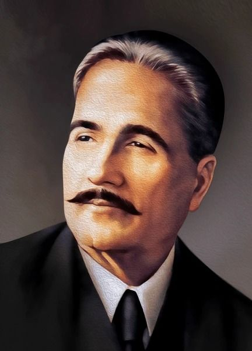

Allama Iqbal
1877 - 1938
Dreamer of Pakistan
Allama Iqbaal was a great poet, philosopher, and thinker of the Muslim world. He was born on 9 November 1877 in Sialkot. Through his poetry and ideas, he awakened the spirit of self-respect, unity, and faith among Muslims, especially in South Asia. Allama Iqbal believed in the power of Khudi (self-realization) and encouraged Muslims to recognize their true potential. His poetry was not only beautiful but also full of deep meaning, motivation, and guidance. He wrote poetry in Urdu and Persian, and many of his works are still studied and admired today. He played an important role in shaping the idea of a separate homeland for Muslims, which later became Pakistan. Because of his services and vision, he is known as the Spiritual Father of Pakistan. Allama Iqbal passed away on 21 April 1938, but his thoughts and poetry continue to inspire people around the world.
“Nations are born in the hearts of poets; they prosper and die in the hands of politicians.”